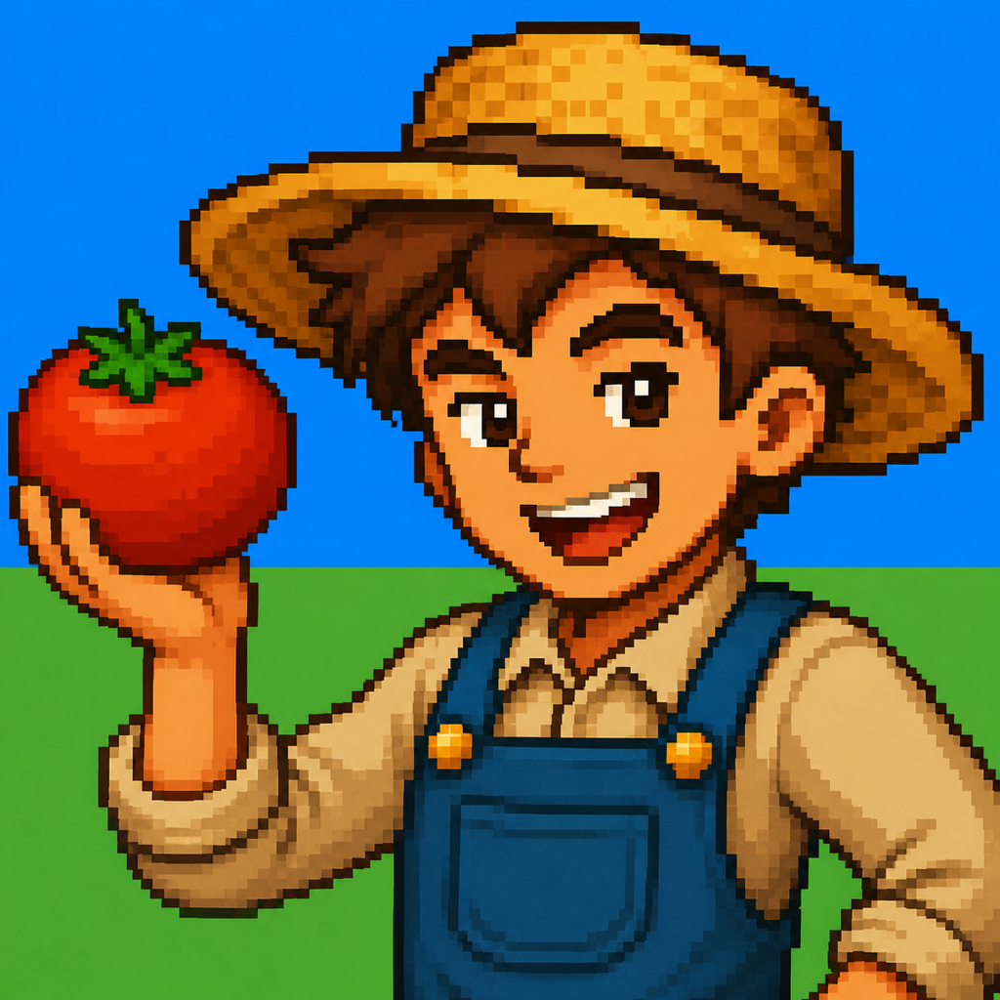

日本語 / English
K2 DEV
iPhone and Mac apps made by an independent developer in Japan.
Koyomikko — seasonal festival games for parents and kids
Carp streamers, the rainy season, Tanabata, summer break, moon viewing. Small games that let children experience Japanese seasonal festivals. One new title each month.

Pomo Land
Every focused pomodoro grows your little farm. For iPhone and iPad.
View on the App Store SupportClearMind
A minimal journaling app: write it down, let it go with the wind, feel lighter. For Mac.
View on the Mac App Store